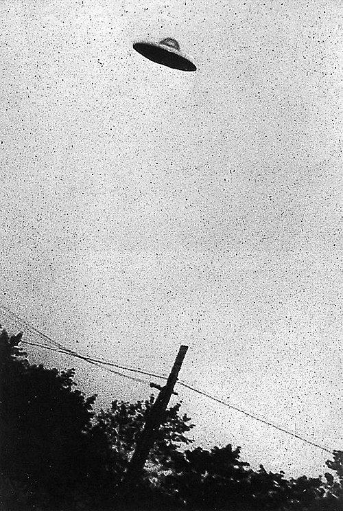
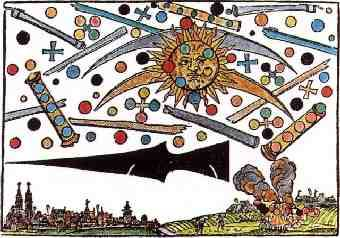
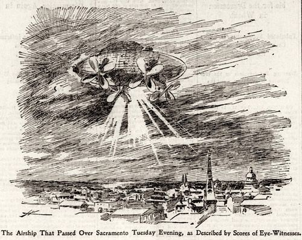
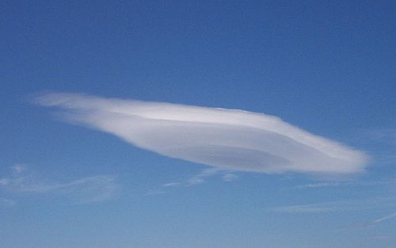
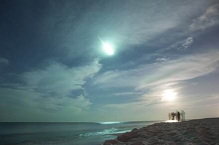
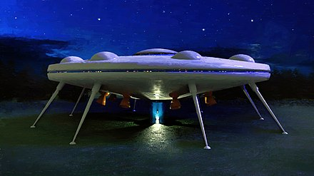
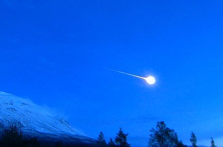

Непізнаний літаючий об'єкт
НЛО — неідентифіко́ваний (невпі́знаний чи непі́знаний чи неви́значений) летю́чий об'є́кт (англ. unidentified flying object, UFO) — будь-який об'єкт, що перебуває в атмосфері або в космічному просторі, неототожнений, не ідентифікований конкретним спостерігачем. У масовій культурі цю назву використовують вільніше для опису інопланетного корабля, що є одним з декількох пояснень, запропонованих для таких явищ.
Явище появи невпізнаних летючих об'єктів у широкому сенсі існувало впродовж всієї людської історії, хоча сам термін «НЛО» ввійшов до ужитку в XX столітті.
З наукового погляду й досі не існує жодного підтвердженого доказу того, що НЛО якимось чином пов'язано з прибульцями перший контакт лишається сюжетом фантастики. Тоді як прихильниками інопланетного походження спостережуваних НЛО є тільки невелика частина вчених, академічна наукова громадськість світу має широку програму пошуку позаземного розуму SETI, яка передбачає можливість виявлення діяльності позаземного розуму в рамках досліджень за допомогою технічних засобів.
У сучасній масовій культурі під НЛО зазвичай розуміється об'єкт, поява якого пов'язується з візитом на Землю розумних істот або посланих ними безпілотних літальних апаратів. Поширене уявлення про НЛО як «летючі тарілки», але це лише одна з багатьох спостережуваних форм, яка набула розголосу з 1947 року після повідомлення американського пілота Кеннета Арнольда про такі об'єкти.
Використання терміну
Спостереження невідомих явищ інтерпретується людьми по-різному, залежно від панівних у суспільстві уявлень, вірувань і страхів. Часто пояснення суті того чи іншого явища визначається релігійним і політичним контекстом місця та епохи, де це відбулося.
Нерідко визначення НЛО акцентують увагу на уявленні про нього як апарат позаземного походження, хоча розшифрування абревіатури вказує, що суть явища неможливо встановити достеменно.
Для багатьох уфологів НЛО, це одне і теж саме, що і радянський (і український) науковий термін «Аномальне аерокосмічне явище» (ААЯ) який означає явище, яке за наявності кількісних і якісних даних, не вдалося ототожнити із природними і техногенними явищами, однак це хибна думка, бо термін ААЯ передбачає наявність доведених факторів аномальності.
Спостереження НЛО
Перший задокументований випадок, який можна ототожнити з НЛО, міститься у Плутарха. Він повідомляє, що в 73 р. до н. е. війська римського полководця Лукулла і боспорського царя Мітрідата побачили велике бочкоподібне вогненне тіло, яке за кольором нагадувало розплавлене срібло. Об'єкт пронісся між арміями, так налякавши обидві сторони, що вони розійшлися без битви. В античних записах є і менш конкретні записи про появу «небесних кораблів» і «колісниць» у хмарах.
За словами китайського вченого XI ст. н. е. Шень Гуа, в його час поблизу міста Янчжоу (сучасна провінція Цзянсу) неодноразово спостерігалася «небесна перлина», що розкривалася і з якої виходило світло, подібне на золоту нитку.
Вранці 14 квітня 1561 року жителі Нюрнберга спостерігали в небі велику кількість блакитних, чорних і червоних куль і дисків, а також два «величезних циліндра», які наче боролися одні з одними, а потім впали на землю, охоплені вогнем і димом
В XIX столітті, особливо другій половині, повідомлення про появу невпізнаних об'єктів почастішали в пресі. Очевидці масово описували їх як механізми, зокрема й інопланетного походження, у більшості схожі на дирижаблі. З'являлися і описи пасажирів таких машин, які начебто представлялися винахідниками чи прибульцями з невідомих областей Землі та інших планет. Розголос пішов на спад після заяви Томаса Едісона 1897 року про те, що лист, нібито адресований йому електриком «повітряного корабля», є ошуканством, а описувані дирижаблі неможливо побудувати.
На початку XX століття НЛО часто пояснювалися польотами німецьких дирижаблів і аеропланів, характерною особливістю яких описувалися вогні й прожектори. Подібним чином, під час Другої світової війни НЛО в масовій свідомості зазвичай виступали нацистськими розробками або секретною зброєю союзників: «примарними ракетами» або дискольотами. Широкий інтерес до НЛО розвинувся після Другої світової війни, чому сприяло зокрема повідомлення американського пілота Кеннета Арнольда про об'єкти, що літали «як тарілки».
Франко-американський астрофізик Жак Валле 1961 року узагальнив випадки спостереження НЛО в XX столітті на основі 891 випадку. Він отримав такі дані щодо видів НЛО: 1) овальна форма — 49,5 %; 2) сферична — 20,2 %; 3) трикутна — 1,8 %; 4) напівсферична — 1,6 %; 5) циліндрична — 1,1 %; 6) інші — 25,8 %.
В 2004 році та протягом 2014—2015 років льотчики винищувачів ВМС США неодноразово помічали НЛО на радарах, записавши деякі випадки на відеокамеру. Згодом офіційний представник ВМС США підтвердив дані відеозаписи з НЛО справжніми. В березні 2020 року Міністерство оборони США оприлюднило три таких відео (одне 2004 року та два 2015) та підтвердило реальність зафіксованих там НЛО. Втім, пояснення їх природи не було надано. Саме ці відео було розсекречено з огляду на те, що вони не розкривають якої-небудь державної таємниці.
Дослідження НЛО
Історія
В дослідженнях проблеми НЛО впродовж XX—XXI століть сформувалося кілька парадигм. Природна, націлена на пояснення феномена НЛО як сукупності природних фізичних явищ: оптичних і, можливо, плазмових. Штучна пояснює НЛО як чиїсь літальні апарати: земні, інопланетні, або з паралельних світів. Суб'єктивістська оцінює НЛО як прояв міфологічної свідомості та «масову істерію». Об'єктивістська парадигма не дає оцінок природі НЛО, натомість шукає емпіричну інформацію про феномен НЛО, уникаючи теоретичних концепцій.
У різних країнах існує безліч громадських самоврядних організацій та ентузіастів, які переймаються реєстрацією та дослідженням явищ НЛО. Ставлення до НЛО офіційних структур двоїсте. У низці випадків, коли широта спостережень та розголос серед громадськості й ЗМІ не залишає можливості не зважати на явище, влади та інші офіційні організації визнають явища і пояснюють їх техногенними причинами або невивченими незвичними природними подіями. У ряді інших випадків, вони заперечують сам факт явища, що викликає у громадськості підозри і конспірологічні теорії про засекреченість (а отже справжність) проявів інопланетного розуму. Першим випадком офіційного визнання можливого інопланетного походження НЛО чинним державним діячем вищого рангу, стало офіційне звернення на сесії Генеральної Асамблеї ООН 1979 року, президента Гренади. У числі президентів США щодо теоретичного існування НЛО (без підтвердження будь-яких випадків) висловлювалися Джиммі Картер та Білл Клінтон.
У той час як прибічниками інопланетного походження спостережуваних НЛО є тільки невелика частина науковців, офіційна наукова громадськість світу має широку програму пошуку позаземного розуму SETI, яка передбачає можливість виявлення діяльності позаземного розуму в рамках досліджень проявів цього технічними засобами в далекому космосі. З розвитком комп'ютерних технологій та інтернету в програмі стала вестися розподілена обробка інформації на тисячах простих ПК.
За дослідженнями Джозефа Аллена Гінека, об'єкти, що спостерігаються вдень, мають переважно білий і металічний колір, а об'єкти, що спостерігаються в темний час доби — жовтий і червоний. Дж. Мак-Кемпбелл висунув гіпотезу про подібність механізмів світіння деяких НЛО і кульової блискавки. Він припустив, що певне джерело радіохвиль високої частоти іонізує повітря, а від частоти хвиль залежить колір плазми.
Письменник і філософ Роберт Тодд Керролл, укладач «Словника скептика» (започаткований в 1994 році), зауважив, що повідомлення про НЛО зазвичай надходять від пересічних людей, які володіють недорогою знімальною технікою, і майже ніколи від професійних астрономів або астрономів-аматорів.
Центральне розвідувальне управління США 2017 року виклало в онлайн 775 тисяч документів на 13 млн сторінок, розсекречених президентським указом Білла Клінтона від 1995 року. Вони підтверджують, що уряд США виділяє великі кошти на вивчення аномальних повітряних явищ.
У 2020 р. у Міністерстві оборони США офіційно підтвердили чутки про створення спеціальної робочої групи для вивчення невпізнаних літаючих об'єктів (Unidentified Aerial Phenomenon Task Force). Як передає Укрінформ, про це повідомляє пресслужба Пентагону.
Класифікація взаємодій з НЛО
Нижче наводиться варіант класифікації повідомлень про контакти з НЛО, запропонований уфологом Джозефом Алленом Гінеком.
Контакти на великих відстанях
Так називаються спостереження, коли очевидця і НЛО поділяють «сотні кілометрів і кілометри». Серед них розрізняють:
- «Нічні вогні. Ясно помітні, чітко окреслені вогні невідомої природи, зазвичай червоного, помаранчевого або білого кольору. До цієї групи належить левова частка спостережень НЛО на великих відстанях».
- «Денні диски. Це спостережувані в денний час об'єкти, як правило, овальні або дископодібні, з вигляду металеві. Їх фіксують високо в небі, близько біля землі і нерідко бачать в стані нерухомого зависання. Денні диски можуть миттєво набирати величезну швидкість».
- «Радіолокаційні „сплески“ на екрані радіолокаторів, особливо які збігаються з візуальним спостереженням за НЛО, вважаються досить цінними свідченнями справжності спостережуваних об'єктів».
- «Денні світні об'єкти. Ясно помітні вдень, світні літаючі об'єкти. В основному не мають чіткої форми. Також спостерігалися групові польоти численних таких об'єктів».
Близькі контакти
Близькими контактами (англ. CE — Close Encounters) називають контакти з НЛО «не далі ніж двісті метрів». До них належать:
- «Контакти першого роду (англ. CE-1). НЛО спостерігається в повітрі та, за враженням, не взаємодіє з навколишнім середовищем, тваринами й очевидцями».
- «Контакти другого роду (англ. CE-2). У цих випадках реєструється взаємодія НЛО з навколишнім середовищем у вигляді перешкод в роботі радіоелектронних пристроїв, виключення систем запалювання у автомобілів, появи відбитків на землі або обпалених вогнем слідів». Відзначено, що часто CE-2 відбуваються серед великих автомагістралей.
- «Контакти третього роду (англ. CE-3). У цій підгрупі повідомлень присутні мешканці НЛО — більш-менш людиноподібні істоти, звані зараз гуманоїдами, енлонавтами або просто — прибульцями… Зазвичай вони не входять в прямий контакт або в переговори з очевидцями, але в останні роки нез'ясовно почастішали повідомлення про тимчасове затримання енлонавтами необережних свідків задля „медичного“ огляду».
- «Контакти четвертого роду (англ. CE-4). Викрадення».
Оцінки інопланетної версії
«Словник скептика» (1994 і пізніше) повідомляє, що НЛО зазвичай є метеорами, штучними супутниками, що розпадаються в атмосфері, зграями птахів, літаками, ліхтарями та аеростатами. Основними причинами віри в НЛО як інопланетні апарати є нездатність відрізнити наукову фантастику від науки, віра в змови з «приховування правди» про НЛО та адаптація міфологічного мислення до умов техногенного довкілля. Сучасній людині легше ототожнювати невідомі об'єкти в небі з механічними пристроями інопланетян, ніж, наприклад, із янголами. Те, що природу деяких об'єктів неможливо визначити, не є аргументом на користь їхнього інопланетного походження; раціональніше вважати, що це природні явища чи земні апарати.
Довідник «Як ідентифікувати неопізнані літаючі об'єкти? Як досліджувати аномальні аерокосмічні явища?» (2022) підсумовує, що як НЛО сприймається широкий набір явищ і об'єктів як природного, так і техногенного походження: птахи, атмосферні оптичні явища (гало, паргелій, парселена, відбиття світла висотними хмарами, міражі), лентикулярні та інші рідкісні види хмар, кульові та інші рідкісні види блискавок, вогні святого Ельма, горіння природного газу, метеори; габаритні вогні літальних апаратів, самі апарати, штучні супутники, відблиски в лінзах фото- й відеокамер, дефекти фотоплівки, сторонні об'єкти в кадрі, особливо ті, що перебувають у розфокусі, відбиття променів штучних джерел світла на склі, хмарах; а також зумисні підробки, виконані шляхом фотомонтажу чи з використанням макетів.
Психолог Карл Густав Юнг в книзі «Один сучасний міф: про речі, спостережувані в небі» (1958) вважав НЛО винятково результатом діяльності людської психіки та проявом архетипів. Цим він пояснював те, що НЛО можуть бути видимими, але не фіксуватися технікою. Причиною того, що НЛО зазвичай мають кулясту чи близьку до неї форму, дослідник називав закладений в підсвідомості мотив єдності й цілісності, символом якого є коло або сфера.
Дональд Голдсміт і Тобаєс Оуен в книзі «Пошук життя у Всесвіті» (1983) зауважили, що в 1960-70-ті роки, в той час як на Заході повідомлення про НЛО надходили дуже часто, в Китаї вони не спостерігалися. Дослідження показало, що китайці не пов'язували невідомі небесні явища із втручанням інопланетян. Проте реформи 80-х років і швидкий розвиток зв'язків КНР із зовнішнім світом, супроводжувалися і зростанням інтересу до проблеми НЛО. Таким чином проблема НЛО пов'язана з властивістю людської свідомості приписувати незнайомим явищам знайомі риси.